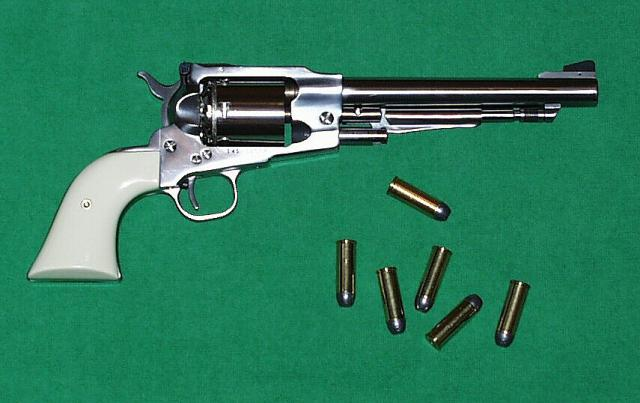

A Day at the Range
L. Neil Smith's Blog
December 18, 2003, Some Broomhandle, etc., PicturesPage 4

Here's a picture of the stainless Ruger Old Army revolver I recently inherited. The barrel is 7 1/2 inches long and the caliber is .45 (long) Colt. I'm not a very enthusiastic blackpowder shooter, but I've always admired this sixgun, which, essentially, is the Ruger Blackhawk overhauled to look and work like a hyperthyroid 1858 Remington. When the opportunity arose to get a drop-in cartridge cylinder for the piece (from Brownell's, of course) I grabbed it. It, too, works just like the factory cartridge conversions Remington did, well over a century ago. The new cylinder is backed by a cover plate with six independent firing pins. And unlike a great many other .45 single action revolvers, I can load six rounds, because the hammer nose rests in a deep slot between the chambers.
You can see a cartridge-converted Remington being unloaded by George Peppard (he's trying to prove to the Indians he's friendly) in How the West was Won, a movie also useful because Thelma Ritter is in it (she goes west in a covered wagon taking Debby Reynolds with her). Thelma Ritter was my major inspiration for Lucy Kropotkin.
Using Winchester "cowboy" .45 Colt loads, my Old Army shoots very pleasingly straight. It's also quite heavy, which makes it nice to shoot recoilwise. It comes down to about the same power and efficacy as a typical .45 ACP. I plan to convert my wife Cathy's Remington replica as soon as I can.